Be your own boss
Take more control of your work/life balance. Choose the hours you want to work and take time of when you want.
- Earn a highly competitive wage
- Better earnings potential
- No redundancy, a skill for life
- Put your family first, push your career where you want
- Flexible working hours
- Exceptional job satisfaction!
Get the best training
A+ A.D.I. Courses are setup to offer flexible training to suit individual needs and personal circumstances.
- One-to-one with a specialist trainer
- Proven record of pass rates
- All A.D.I. Levels
- Cost effective courses & materials
- Individual support
Opportunity to join A+
Many of our current pupil instructors have passed their A.D.I. exams with A+. Using the skills and high quality training they have been given they are now working with us on the path to an enjoyable and rewarding career
A.D.I. Part 1 Course
A+ Home Study Pack £75
- Application for written test (Part 1) £64
A.D.I. Part 2 Course
ADI test application: £130
- 8 Sessions for Part 2 of the exam: £720
- Help and support from A+ Chief Instructor, Robin McDonald
A.D.I. Part 3 Course
ADI test application: £138
- 35 Sessions, in-car - one to one tuition: £3000.00 approximately
- Help and support from A+ Chief Instructor, Robin McDonald
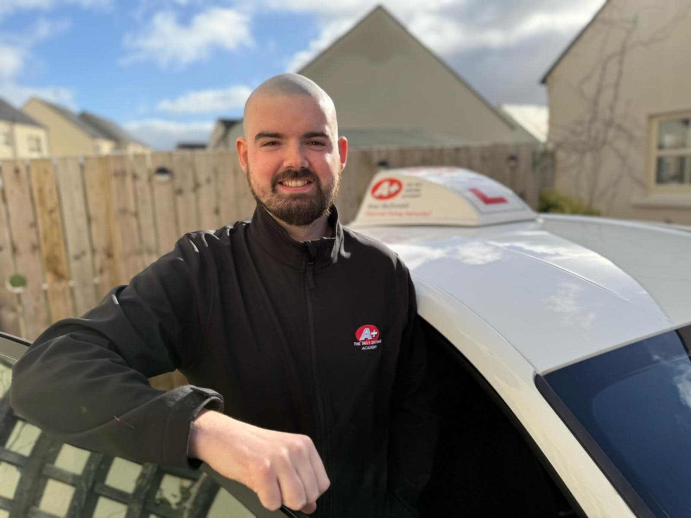
Brad McDonald A.D.I.
I’d like to express my sincere thanks to A+ Driving Academy for helping me achieve my goal of becoming an ADI. From start to finish, the training process was incredibly smooth and rewarding, thanks to the commitment, flexibility, and expertise of the team. A special mention goes to Barry Moffatt, who trained me for Part 3 of the ADI process. Barry’s wealth of knowledge and experience really stood out, and he ensured I passed first time. He was always good craic, making the lessons enjoyable and something to look forward to. His approach to training was not only professional but also very personable, and he was always available for advice both during and outside of our scheduled lessons. This made the entire experience far less stressful and much more engaging.
I also want to thank Robin McDonald, who played a crucial role in my training alongside Barry. Robin’s guidance and support were invaluable, and the personalised approach they offer as a team made a world of difference in my preparation. Overall, A+ Driving Academy is a fantastic choice for anyone looking to pursue their ADI qualification. Their commitment to high-quality, flexible training, coupled with their deep understanding of what trainees need, ensures that you’ll receive top-notch instruction every step of the way. I couldn’t recommend them highly enough!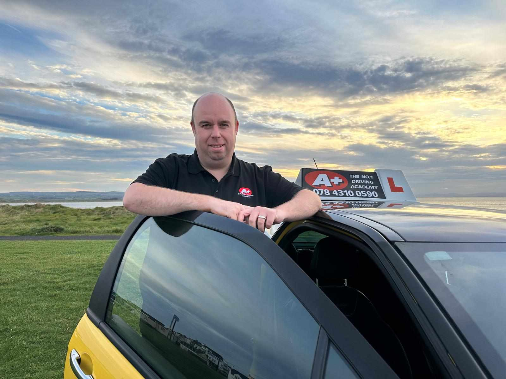
David Ussher A.D.I.
My name is David Ussher after being in the motor trade for over 20 years I decided to change my career. I was recommended to contact Robin at A+ Driving Academy and Robin provided great help and support throughout.
After passing part 1 Robin put me in contact with Andy Watson for my part 2 training , Andy’s knowledge and training was first class and with this I passed my part 2 first time I would like to thank Andy for all his help and support. After this then it was time for the Part 3 and was in contact with Barry & Kathryn from A+ I really enjoyed my training sessions with them they were always full of support and encouragement and with all there guidance and training I passed my part 3 first time they both are fantastic trainers and I would I would like to thank them both. Also a mention to thank Robin and the A+ family for all there support and encouragement and would highly recommend anyone wanting to become a ADI to contact Robin at A+ Driving Academy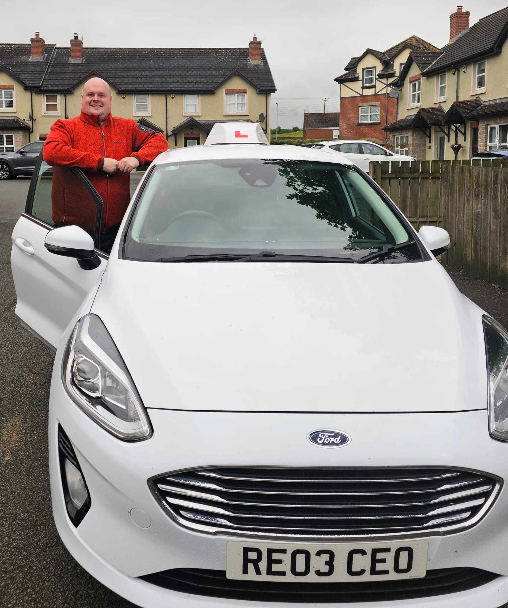
Reece McDaid A.D.I.
I'm thrilled to share my experience of becoming an Approved Driving Instructor through A+ Driving School. After spending 15 years in IT, I decided to change my career path to pursue my passion for driving. This significant career shift was made smooth and rewarding thanks to the exceptional training and support I received from A+ Driving School.
A+ Driving School’s dedication to safety, personalized education, and professional development truly sets them apart. Their mission to educate drivers to make the best decisions on the road was evident throughout my training. The structured yet flexible training program met all my needs and ensured I was well-prepared for the responsibilities of an instructor. One of the key factors in my successful transition was my trainer, Barry. His commitment to my development was unwavering. Through our weekly training sessions, Barry provided personalized guidance and adapted my development plan based on my progress. This individualized attention was crucial in building my confidence and honing my skills effectively. Overall, A+ Driving School and Barry provided an exceptional and supportive training experience. I highly recommend A+ Driving School to anyone looking to become a driving instructor or improve their driving skills. Their commitment to safety, quality education, and personalized training makes them a top choice in driving instruction. Transitioning from IT to the school of motoring was a big step, but with A+ Driving School, it felt like the right one.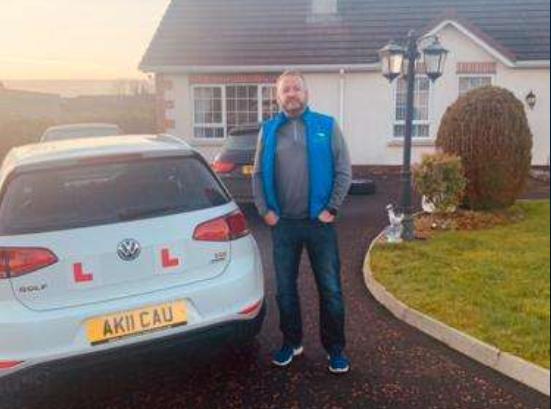
Patrick A.D.I.
My name is Patrick, I recently passed my Part 3 (Instructional Test) to become an ADI. This was due to the excellent tuition I received from my Instructor Barry Moffat of A+ Driving School.
It was very challenging but also an enjoyable experience. My training took place in a relaxed environment and was delivered in a very professional manner. The level of support I received from Barry far outweighed my expectations. Outside of the practical lessons, he was always willing to take a call when I needed advice.
I'd like to take this opportunity to thank Barry and A+ Driving in helping me to achieve my goal of becoming a driving instructor at the first attempt. For anyone thinking of becoming an ADI I would highly recommend them. Their expertise, dedication, professionalism and personal touch is unrivalled.
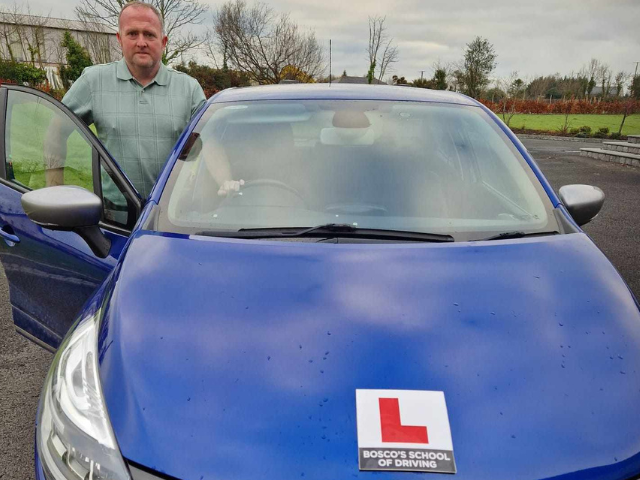
Bosco Hughes A.D.I.
Hi my name is Bosco Hughes. I recently passed my part 3 ADI test with the help of A+ Driving Academy With weekly lessons with Barry and Kathryn they give me the knowledge and training required to pass. I really enjoyed my training with them they were always full of support and friendly. Not every day would go the way u wanted but they always reassured me both on my lessons and over the phone between lesson. Now that I'm qualified I can go about the job I love to do.
I would like to take this opportunity to thank A+, Barry and Kathryn for all there help.
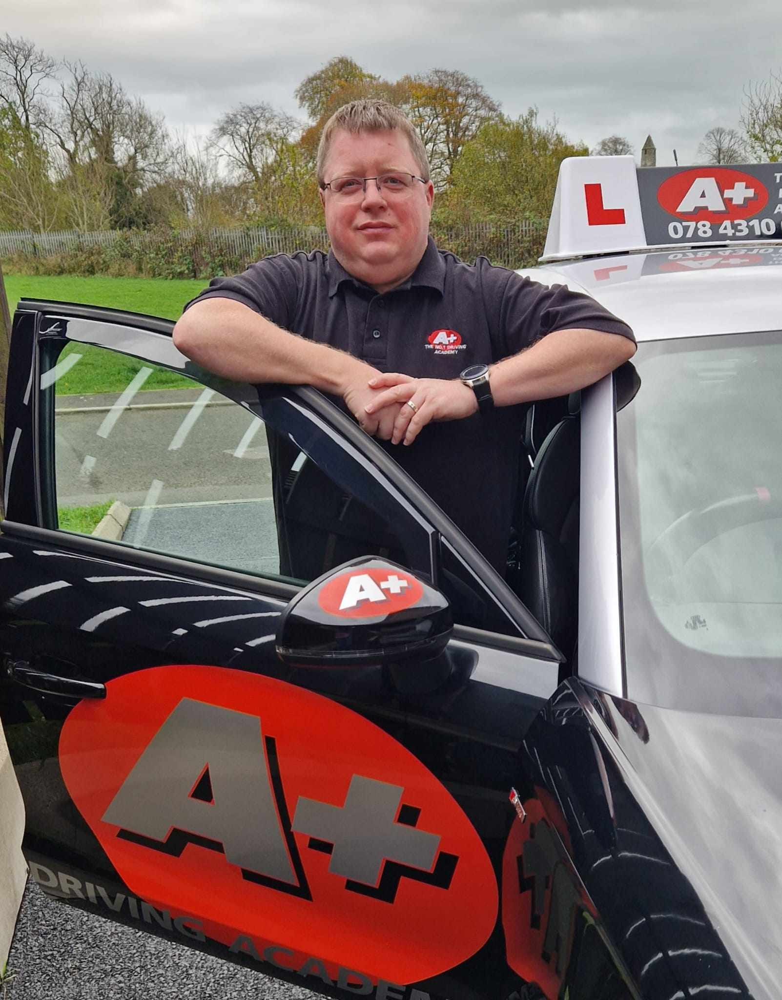
Gordy Wilson A.D.I.
I was an electrician since leaving school 30 years ago and the last 10 years I wasn't entirely happy with my job, after speaking to a work colleague that was a part time driving instructor I knew that this was the job for me as I loved driving and working with people. I started my training and quickly got my pt 1 and 2 and wanted to join a reputable company to do my pt3 with. After speaking with another instructor Robin came highly recommended, I had several conversations over the next month and decided it was the right choice for me. Robin put me in touch with Barry Moffatt who took me through my pt3 training. Without his expert guidance I would have struggled, he helped at every opportunity and pushed me through when I didn't have believe in my abilities giving me the confidence to pass. I would highly recommend Robin and his team for anyone wanting to become an ADI.
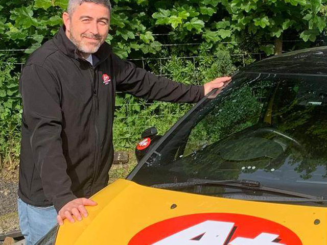
Steven Michael A.D.I.
I'm Steven Michael and I've been a lorry driver most of my working life. Although driving instruction has been in the back of my mind for the last few years as a nice follow on job to life on the road. After chatting to another instructor I was advised to chat to Robin here at A+, a couple of conversations later and I was on my journey. Got through part1 and part2 then on to the hard part...PART3.... Now I'll not pretend it has been easy but Robin teamed me up with Barry Moffatt as my weekly trainer and with hard work (from both of us) I've passed and the feeling is amazing. Barry has great knowledge of the training required to make it through and made our training sessions informative but relaxed. Barry was also always on the other end of the phone to answer any queries I had between lessons. I would highly recommend A+ for all the ADI training so much so that I have joined the team and am really enjoying my new career. It has definitely been the right choice for me.
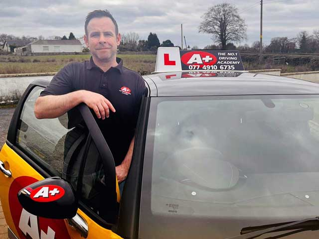
Derek O'Mullan A,D.I.
Driving has always been an ambition of mine. Therefore, after years of debating I took the plunge and went on the journey of becoming a driving instructor. Robin was recommend to me by an old work colleague who had went through the process himself. After our first phone conversation I knew I had made the right choice. Robin created a stress free environment, which helped improve my knowledge and confidence weekly. With his guidance and support I am now a fully qualified driving instructor. I would highly recommend Robin to anyone, his knowledge and expertise is remarkable.
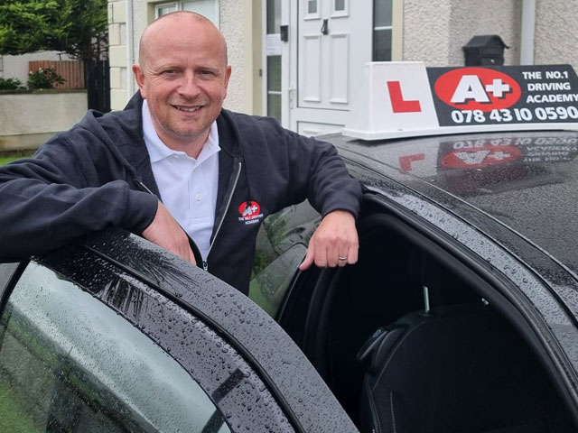
Barry Moffatt A.D.I.
My name is Barry Moffatt and I was at a point in my life where I was really ready for a total change of career. Becoming a Driving Instructor was something I had thought on and off about for a few years so I decided to take the plunge. After 20 years in the car trade it was something I thought I would really enjoy and would improve my work/life balance.
I saw an advert on social media for A+ Driving Academy and contacted Robin. After that initial phone-call I had an informal meeting with Robin where he clearly outlined all the steps involved in becoming an Advanced Driving Instructor. Once that meeting was over I was keen to get started on Part 1 of the training. After completing that I then began my Part 2 and Part 3 training with Robin and John.
The training was to a very high standard, and both Robin and John were very knowledgeable and delivered 1st class training in a structured and informative manner. Robin and John were always on hand for any queries I had and although it was difficult I managed to pass all 3 parts. I can’t recommend Robin and John highly enough and I am glad to be able to start enjoying my new career as a driving instructor.
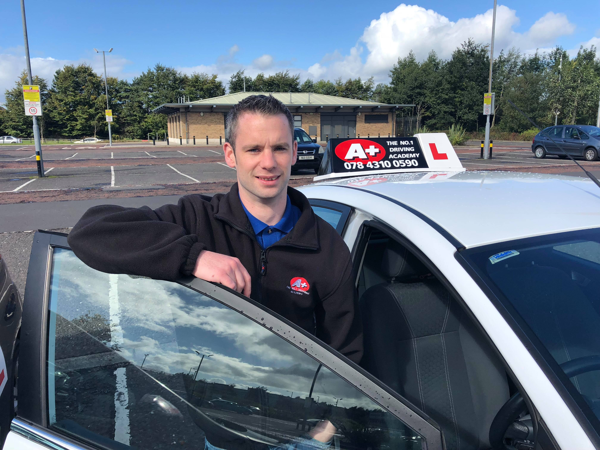
Steven Brace A.D.I.
I always wanted to become a driving instructor since passing my own driving test all those years ago. I passed parts 1 and 2 fairly quickly then it was onto the dreaded part 3! After talking to a few instructors I soon found that A+ was the place to go for training. I knew the first time I met Robin I had made the right decision, his knowledge and ability to play the role of a pupil was outstanding, he planned all the lessons out so I had time to study for the next lesson and was alway on the phone to answer any questions I had. I am now living the dream working for A+ driving academy, Thanks Robin for all your help much appreciated!
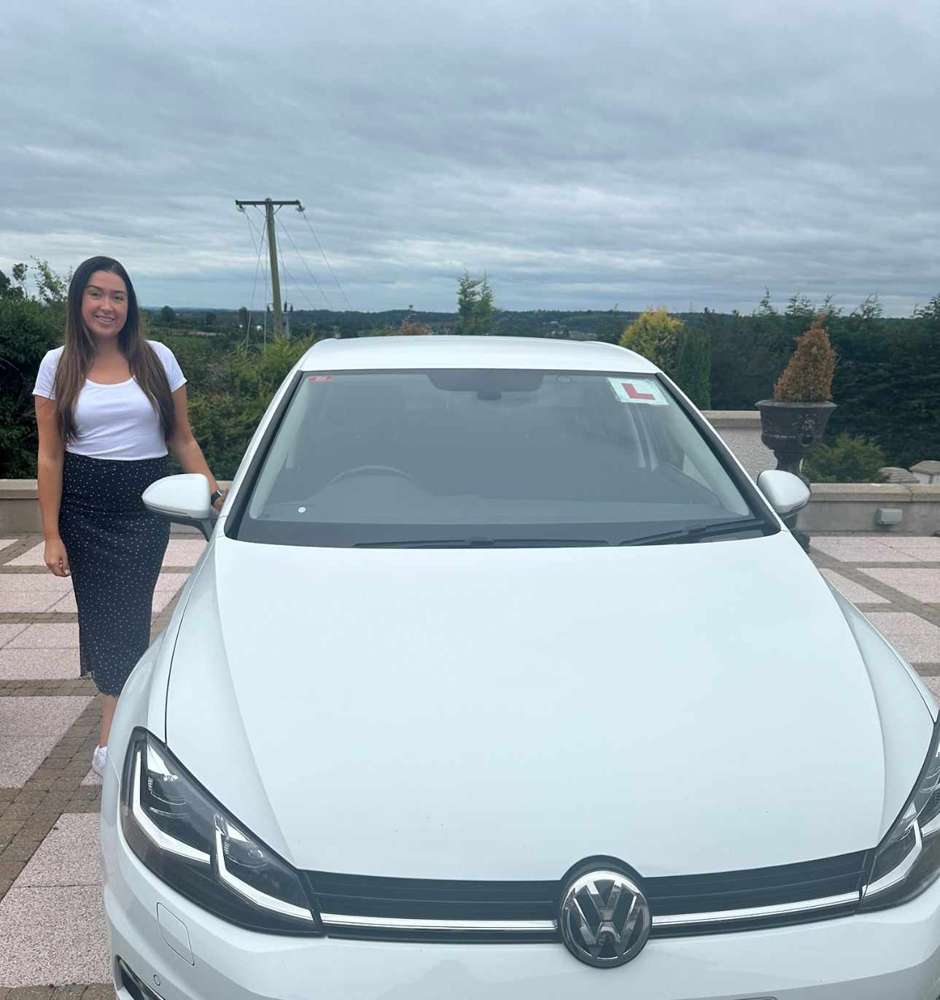
Sionnain A.D.I.
Hi, my name is Sionnain. I could not have passed my part 3 test without the help, support and guidance from Barry at A+ Driving Academy.
Barry’s dedication and professionalism was instrumental in helping me pass my part 3 on the first attempt. While the entire process may feel overwhelming at times, Barry was on hand to provide reassurance every step of the way, right up to and including the day of the test Barry was phoning me to give me words of encouragement and I cannot thank him enough for taking time out of his schedule to give me that support. I would also like to take this opportunity to thank Kathryn who was able to provide extra lessons for me on the lead up to the Part 3 test. She was excellent and was a great benefit to me as well. I cannot recommend them both enough.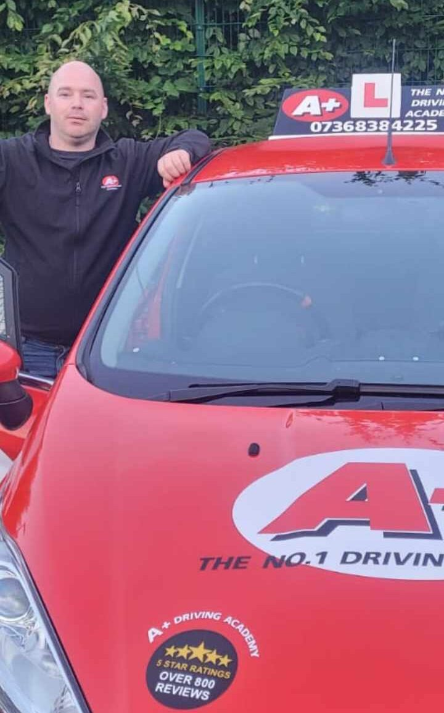
Andrew Bishop A.D.I.
Barry was an amazing instructor. He helped me pass the part 3 with a score of 5-5 which I couldn't of done without his help, He has a great sense of humor and the patience of a saint. I would highly recommend Barry to anyone who is looking at becoming an ADI..
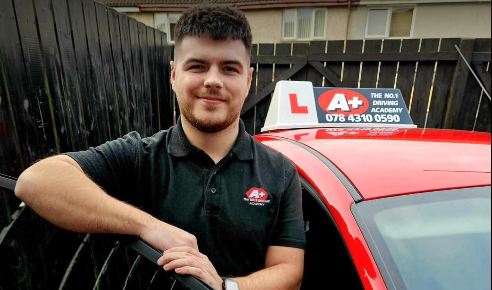
Derren Crawford A.D.I.
My name's Derren Crawford, I was in the welding industry for a long time but decided I needed a refresh in career. Driving instructing intrigued me so after a bit of research I decided to take the plunge.
I was recommended to contact Robin to get things started and he made the process very easy. After getting through part one first time he passed me on to Andy Watson for part 2 training and with his help and knowledge I was through that first time. Then it was on the the infamous part 3, Robin linked me with Barry Moffatt and the hard work started. They don't lie when they say it's hard work, because it takes a lot. Good thing is Barry made the lessons very relaxed, very informative and you always left feeling good, he has a great knowledge of what to expect on part 3 and with his help I managed to pass it first time.
Now I'm a fully qualified instructor and part of the Aplus team and loving every minute, Robin makes working life very easy, allows you to work at your own pace and sorts what you need. Anyone thinking about taking that step don't hesitate to get in contact with Robin and the team, you won't regret it!
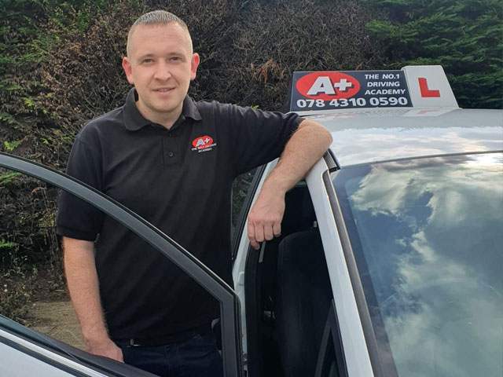
Andy Watson A.D.I.
After many years in Engineering I decided it was time for a career change. After doing my research it was clear to see that Robin was the man I needed to get me through my Adi training.
I contacted Robin and within a few months I had past my part 1 and 2 fairly quickly and then it was on to my part 3. After talking to other driving instructor's I knew it wasn't going to be easy. John took me out for my part 3 training and there couldn't of been a better man for the job he was patient and informative.
I went for my part 3 withing 9 months and I got it first time with a 6/5 pass! I'm now working for A+ driving school and I'm extremely grateful for all there support. I would highly recommend anyone looking a career change to contact A+.
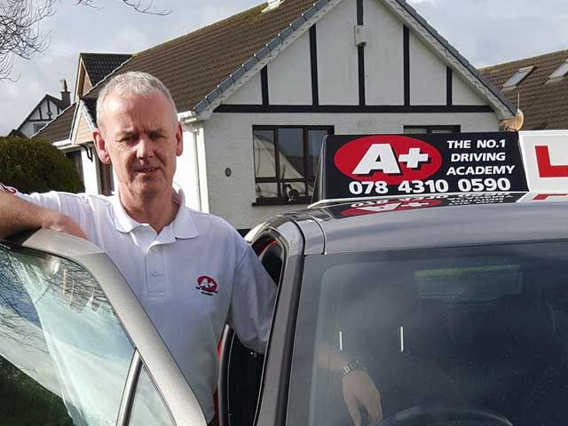
Terry Kane A.D.I.
After the closure of the factory were I was employed, I decided to follow my passion to become a driving instructor.
When researching and asking various other instructors it became evident that Robin McDonald was highly recommended and had one of the highest pass rates of any trainer.
I can now personally confirm this as I passed part 1 and 2 within 6 months and part 3 within the year with a 6/5 at the first attempt. I am now working for Robin as an instructor with A + driving academy and am thoroughly enjoying my new career.
Robin is always there with any guidance or advice that I require.
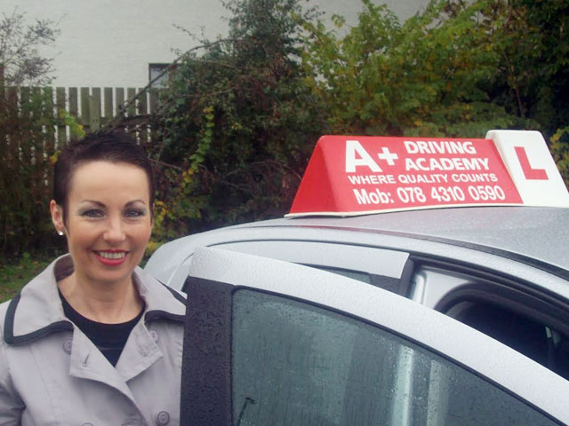
Thelma Smyton A.D.I.
I decided on a career change. My new career choice was to be a driving instructor. I signed up with a well known driving school with great anticipation and looking forward to a successful end result. I passed Part One and Part Two within the year. With the dreaded Part Three on the horizon I quickly discovered my training was insufficient and unsatisfactory to see me to my goal. My friend, who was with this same company, was also discouraged with them after he had failed his Part Three twice.
Fortunately he found Robin McDonald’s flyer on his car windscreen and passed it on to me. Lucky me! I phoned Robin and made an appointment and based on that initial contact I made one of the wisest decisions of my life….and made Robin my new instructor trainer. With Robin’s professional training, his encouragement and calming influence I went from being a discouraged student to a confident, happy student knowing there was light at the end of the tunnel. Robin McDonald I have you to thank for my achievement.
If I could turn back time… the only thing I would change… would be…to have made the “wisest decision of my life” and had Robin McDonald as my Instructor Trainer from the very beginning of my dream.
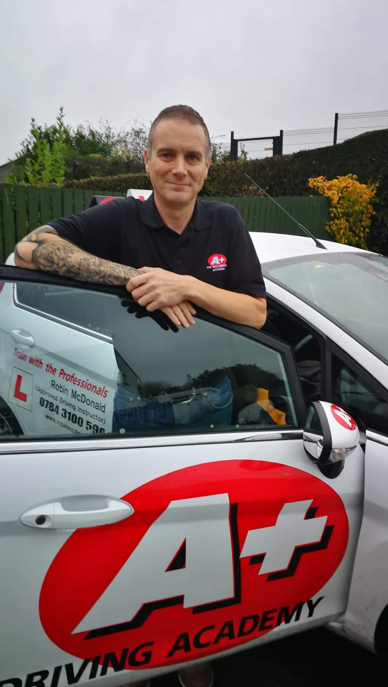
Alan McAfee A.D.I.
My name is Alan McAfee. I first thought about a career change to becoming a Driving Instructor in 2008 but due to other circumstances it never developed. However, in 2018, after many years in an Engineering/Manufacturing background, I made the decision to become a Driving Instructor. Initially I went with a well known driving school in Belfast and completed parts 1 & 2. I had my first attempt at part 3 and failed. I was told that if I had been teaching learners it would have been a different outcome. Unfortunately, this would have meant me teaching learners in Belfast which wasn't an ideal situation. When scrolling through Facebook one day I noticed an advertisement from Robin McDonald looking for new driving instructors. I contacted Robin and it wasn't long before I was teaching! I then proceeded to undertake my part 3 training with John and Robin. Their training methods, attitude, approach and knowledge were second to none and, over time I grew in confidence. It was hard work and required dedication and commitment on my part but, as time went on, it all made sense. I had a second attempt at the part 3 and passed! I was over the moon! There is no doubt in my mind that the total package of teaching learners with the specific teaching tools provided by Robin and his team, was the catalyst for my success! If you are thinking about a career change I would highly recommend that you contact Robin at A+ Driving Academy.
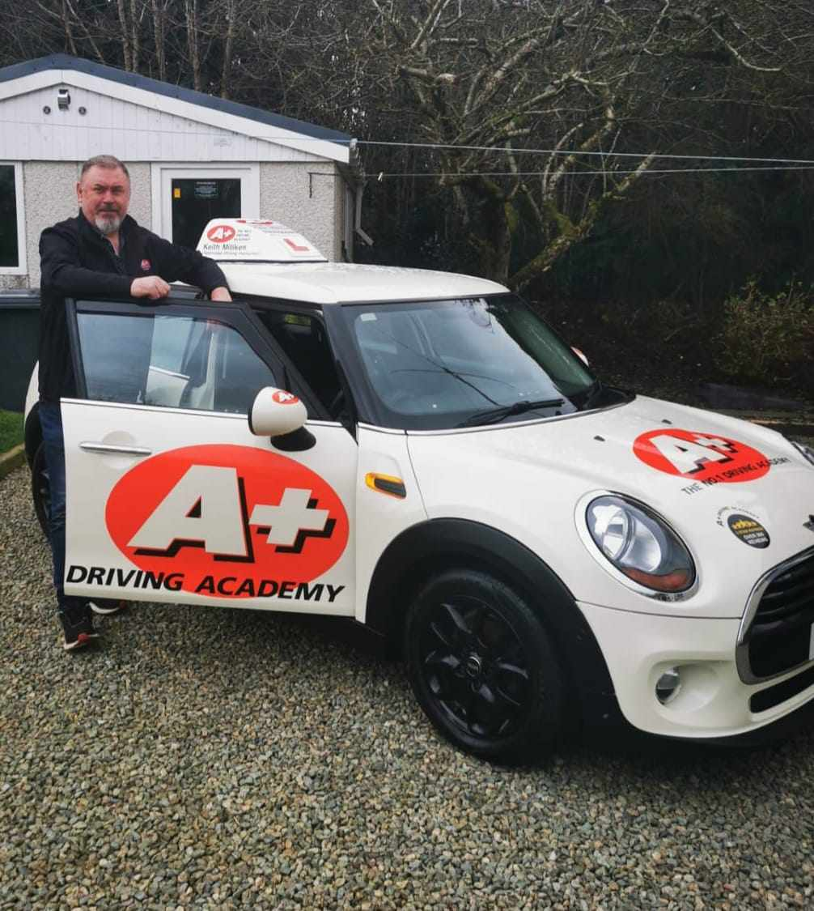
Keith Milliken A.D.I.
I would like to take a wee moment here at thank Robin McDonald & A+ Driving Academy for helping me on my journey to become an ADI at the 1st attempt !!!
There's a couple of fella's that I really want to thank here as well ...
Andy Watson,, what an absolute pleasure it was to meet you during the part 2 training. What a lovely fella,, with such an easy going way in his training methods . So relaxed and calm, but carrying out a 1st class job in the end !!!! "Absolute Gent"
Barry Moffat "Baz" Well well well where do I start here lol lol.. What a crazy few months we had during part 3 training. From the 1st session o fk this shit until the last one on Sunday past , the Craic was unreal. Such a great job you done in teaching me what I needed to know to get this over the line. Patience o a saint, and an absolute gentleman as well.
Thanks so much lads and everyone involved with A+ Driving Academy....
SIMPLY THE BEST !!!!
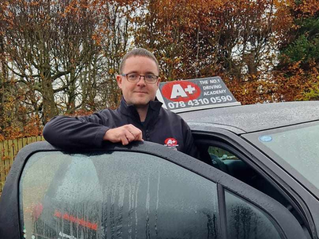
David Lowry A.D.I.
Hi my name is David Lowry & I live in the Ballymena area & have just recently passed my part 3 examination with Aplus driving academy.
From the outset Kathryn was amazing. She made it very clear that if I wanted to pass part 3 I would need to put in alot of work in both with her and with studying at home...
From our first lesson together it was very clear that Kathryn was very knowledgeable in regards to what part 3 and the training required. She made me feel very comfortable and always gave me advice and feedback throughout each lesson. Kathryn was always available through text, calls etc and was a fantastic help through the months of hard training leading up to the test. Kathryn was always very positive throughout and gave me lots of encouragement and made me feel that together we could pass the exam.
Barry stood in for Kathryn and was a massive help as well. Again his knowledge around the part 3 training was obvious and he to played a massive role in me passing the exam. He put me through my paces carrying out a mock test the week before, giving me feedback and advice which I was able to carry forward into the test.
I would just like to take the time to thank both Kathryn and Barry for their help and support throughout my training. Both were amazing and such a help...without the training they both provided I would have struggled but thanks to them I was able to pass first time. So thanks to them both for their support, advice and encouragement.
I'd like to thank A+ for taking me onboard and giving me the chance to change my career to something that suited my family life...they have been great. Since meeting Robin he made me feel wanted and welcome and pointed me in the right direction. During the training pupils were provided with no hassle which gave me the experience I needed to help me towards getting my part 3 exam.
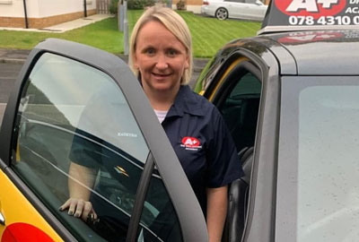
Kathryn Blair A.D.I.
HI my name is Kathryn Blair. Having spent the last few years at home raising a young family, the time came for me to take on new challenge. After some research I met with Robin who was very helpful and talked me through the process and different stages involved. I then started my journey, passed part 1 and began training for part 2 and then onto part 3 . With the high quality of training that I received I was able to pass part 3 1st time and all within the year. I would highly recommend A+ Driving Academy.
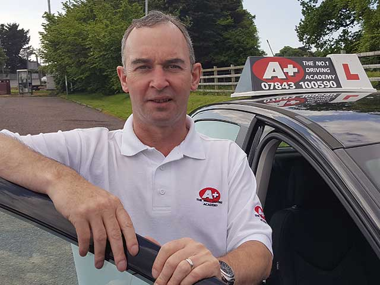
Peter Lynch A.D.I.
Hi, I'm Peter Lynch from Derry. I started my ADI Part 1 in approx Jan 2014, then I did my Part 2 training with Robin in March and had passed my exam a few weeks later and then part 3 training.
I found Robin's training well structured and he planned the next lessons out for me so I could always prepare for my next session. Robin does play the pupil role very well, he is very knowledgeable in this field.
Anyone thinking of a career as a driving instructor and unsure who to go with, I can highly recommend this guy as I had read comments on this site before i made my decision.
I'm now a fully qualified ADI, working for A+ Driving Academy & loving my job. Thank you Robin!
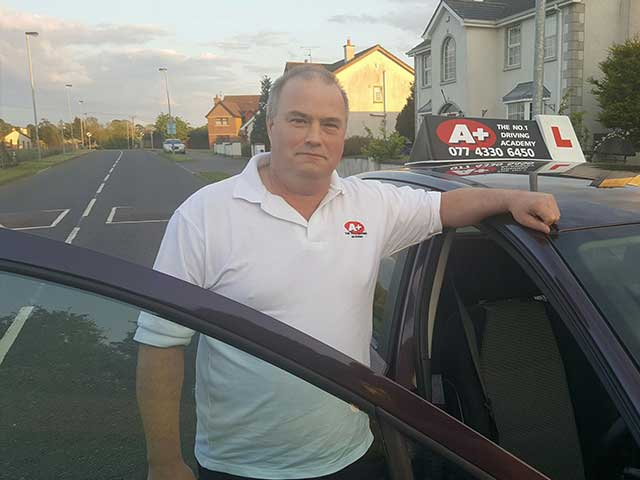
Joe Peoples A.D.I.
Having passed ADI Part 1 and 2 I start training for Part 3. I soon discovered I was having lots of problems while at the same time spending lots of money.
I decided to try a new instructor trainer and phoned Robin McDonald and booked a lesson. From the very start of my training I knew Robin was the instructor for me. He knew exactly what was needed to pass ADI Part 3.
His friendly manner, knowledge skill and the technique he used made learning a lot easier.
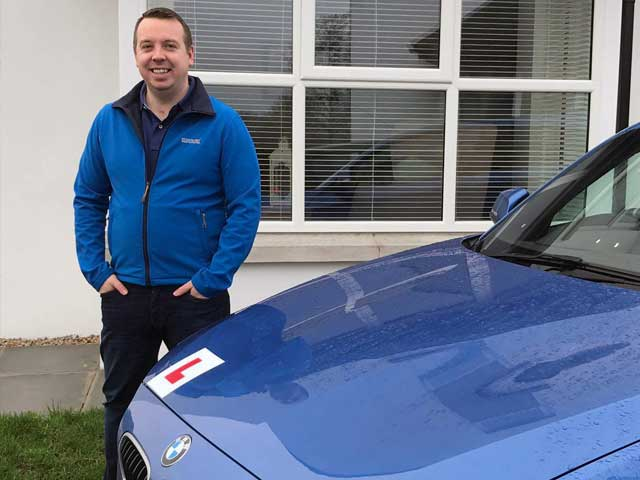
Paul McKeegan A.D.I.
After finding out I was being made redundant I decided it was time for a career change. I wanted to be self employed so I could set my own hours. I have always enjoyed driving and so becoming a driving instructor was the obvious choice.
I completed my part 2 in Belfast with another driving school but when it came to part 3 the instructor seemed very unsure of what he was doing. I spoke to a few people I worked with who where also training to be driving instructors and they recommended I use Robin. I learned so much from Robin and found that with every lesson I gained more and more information and I improved week on week. I can't recommend Robin enough, he is very knowledgeable in every aspect of his job and not only got me through my part 3 but put me in touch with the right people in order to start my own business.
Mark Benson A.D.I.
2 years ago I decided I needed a career change so becoming a driving instructor was the change that I needed to make for me and my family.
I passed Part 1 and 2 within a year but due to unsatisfactory training from unnamed parties for Part 3 I failed the first and second attempt. My dream of becoming a driving instructor was becoming unattainable and I was losing hope fast.
I contacted my old friend Thelma Smyton who I did some of my Part 3 training with. Thelma advised me to contact Robin so I took her advice. It was the best decision I’ve made in the whole process; I found Robin down to earth, easy going and his knowledge was second to none. Robin restored my confidence and self belief in my own ability.
In May 2011 I passed my third attempt of the Part 3 thanks to training and know-how of Robin McDonald.
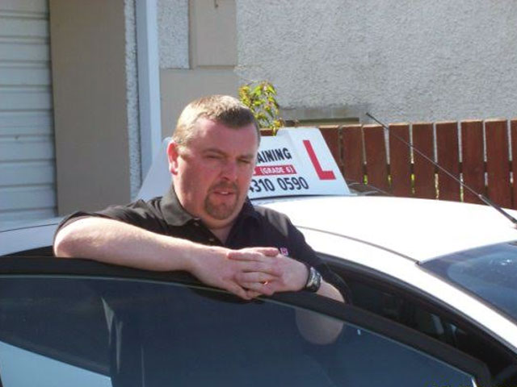
Ivor Doey A.D.I.
Wanting to Become a Driving instructor? Then look no further and choose Robin McDonald. Doing my part 2 I found I had quite a lot of habits but with lots of determination and drive Robin's friendly approach towards tuition helped me sail right through and I passed my part 2.
Then it came to part 3 which I was dreading but with Robin's true confidence in me and expert advice I passed my part 3 with ease. I would highly recommend Robin to anyone who wishes to become a driving instructor.
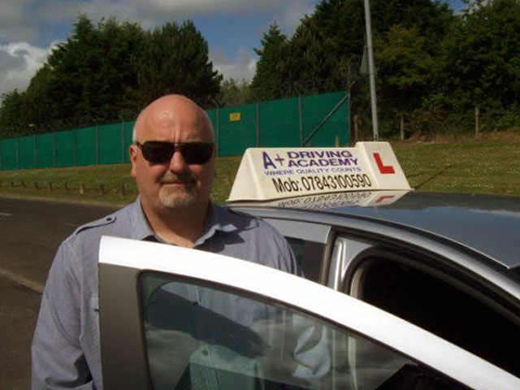
Keith Archibald A.D.I.
Becoming a Driving Instructor was a big career change for me, however starting the training with Robin soon allayed any fears I had. Not only did I complete Parts 1 and 2 but I was lucky to be given a job by Robin at A+ Driving Academy.
My experience and further training led me to pass the part 3 and I am now an Approved Driving Instructor. It was Robin's training and realistic role play scenarios which enabled me to pass the part 3 and would have no hesitation in recommending him as an ADI Trainer.
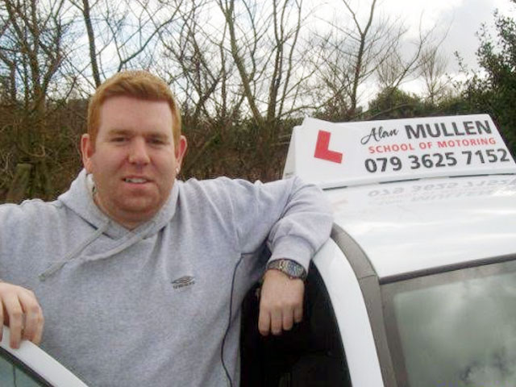
Alan Mullen A.D.I.
Firstly, thanks to Robin for helping me realise my dream of becoming an Approved driving instructor. After failing part 3 exam on two occasions with a 3/4 and a 3/3 with another trainer I didn't have much confidence and doubted my ability of becoming a driving instructor.
I spoke with one of my friends who had passed their part 3 test with Robin as their trainer and decided that a change of trainer was required. I contacted Robin and knew from the first phone call that I was making the right decision. Robin immediately gave me the confidence and put the fun factor back into learning.
All of Robin's lessons were well structured and prepared me for my final attempt at my test. Robin showed me were I was going wrong and ironed out any issues that i had. The results speak for themselves 5/6. If you have a desire to becoming a driving instructor, then make the right decision and contact Robin for your training.
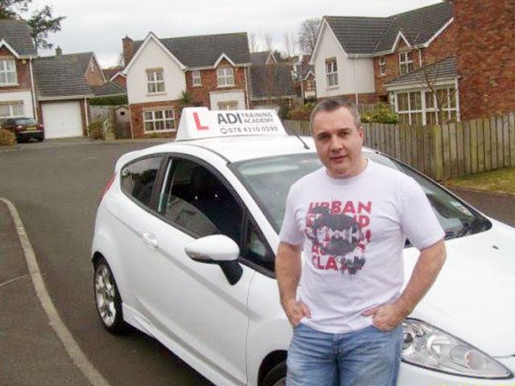
Robert Gallagher A.D.I.
I decided I wanted to become a driving instructor and after spending a lot of money to go with a very well known driving school, I passed the first 2 parts of the ADI course. But that is where the dream ended. After failing my first attempt at part 3 with a very poor score, I quickly realised that the training i was receiving for this the most difficult of the three exams was grossly inadequate and because I didn't have any pupils to help me train I knew there was no way i'd ever pass with this level of instruction. By coincidence I met a friend i hadn't seen in years, we both got talking and it turned out he had also became a driving instructor and had just qualified as an ADI, he went on to tell me that he had the same problem as myself with his previous instructor, he then informed me that I should contact Robin McDonald as he was the man responsible for getting him through his part three very quickly, and he couldn't praise Robin enough. His actual words to me were "after the first lesson you'll know you made the right decision." And how very true his words were. After the lesson I told my wife that I would pass on my next attempt. After approximately four months of excellent, calm, encouraging and extremely informative tuition with Robin McDonald i passed my part three test with excellent grades. To reach this level compared to what I got before was an amazing transformation and was due to the training I received from this expertly skilled trainer who prepared me to a very high standard enabling me to cope with anything the examiner might test me on. I can only thank Robin for getting me passed and for the high level of knowledge he imparted to me.
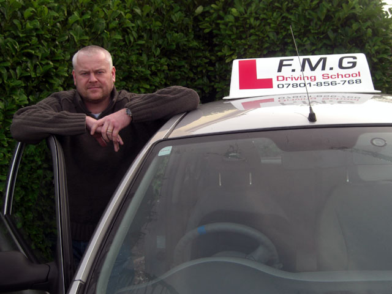
Francis McGonagle A.D.I.
What can I say except a truly great ADI trainer!!
I was told about Robin having myself failed the dreaded part 3. I took a chance and gave him a call and after the first lesson I knew I'd made the right decision.
Right from the start he showed me where I was going wrong in a very patient and professional manner with plenty of humor thrown in. He gave me straight forward and easy to understand information and thanks to him I achieved two grade fives. I would recommend Robin to anyone who is thinking of starting a new career as a Driving Instructor as it was worthwhile for me.
Eddie Mulholand A.D.I.
When I was wanting to start a new career as a driving instructor, I approached Robin McDonald to find out what was involved. Right from the start Robin was there helping me pass my part 1 exam.
When it came to the part 2 exam Robin was soon able to bring my driving up to a good standard enabling me to pass the part 2 with only 1 minor I found his knowledge and teaching methods to be very easy to understand was also very patient and friendly at all times.
Next was the dreaded part 3 and again Robin was brilliant as he guided me through each subject with his in car one to one training and he new exactly where my weakness was he encouraged me when I felt like giving up. I found him very helpful and knowledgeable in all the subjects that we had to cover. It was with Robin's help that when it came to the part 3 exam that I achieved a excellent grade!!!.
I would say that without Robin i would never have achieved my goal of becoming an ADI. If you are thinking of becoming ADI Look no further! Robin's the perfect trainer... As I start my new career I can relax knowing that Robin is just a phone call away. I would like to say a big thank-you to him.
Jason McVeigh A.D.I.
I decided to become a driving instructor as the building trade was quickly going downhill. I signed on with a well known big company but was soon disappointed with the training they provided.
I past part one and two with the company but soon realised the training as inadequate. I failed part three on my first attempt.
I had seen A+ cars throughout the town so looked them up on the net and thought i'd get in contact with Robin. It was the best decision I made. After just one lesson with Robin I learned more than with 30 lessons from the other company.
Robin's training is well structured and one to one and he is a great trainer, very friendly and professional. I felt a lot more confident going for my part 3 the next time around and was over the moon to have passed.
I cant thank Robin enough for all he has done. Would recommend him to anyone thinking of ADI training.
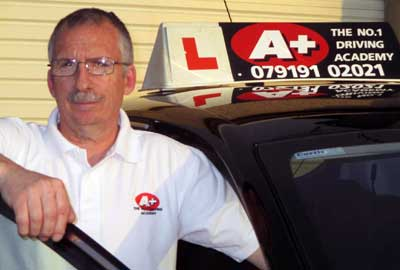
Uel Hayes A.D.I.
My name is Uel Hayes and when I was informed that I was going to be made redundant I decided to go down the road of becoming a driving instructor, as I have always been interested in driving. I have been a member of the IAM (Institute of Advanced Motorist) and have held the advanced driving licence for a car and motor bike for over 15 years. When I inquired from local driving instructors that I knew, who would be the best person to go to, for driving instructor training there was only one answer. Robin mc Donald. From my first phone call to Robin, I knew I was speaking to the best man for the job. He explained in easy to understand detail exactly what was involved to become a driving instructor. From the part 1 up to the final part 3. Once I had passed my part 1 I started my part 2 and 3 training with Robin. From the first lesson Robin was informative and knowledgeable about every aspect of the training, and came across very professional and friendly. So, by the time I was ready for my tests every eventually was covered. Since passing my tests I now work for A+Driving Academy as a driving instructor. I would have no hesitation in recommending Robin Mc Donald to anybody that would be interested in becoming a driving instructor.
If you have a passion to teach, and get a buzz from seeing people develop skills for life, you could train as a driving instructor, and get on the path to an enjoyable and rewarding career with A+ and we want to hear from you!
Becoming an A.D.I. is a job like no other, it can change your life.